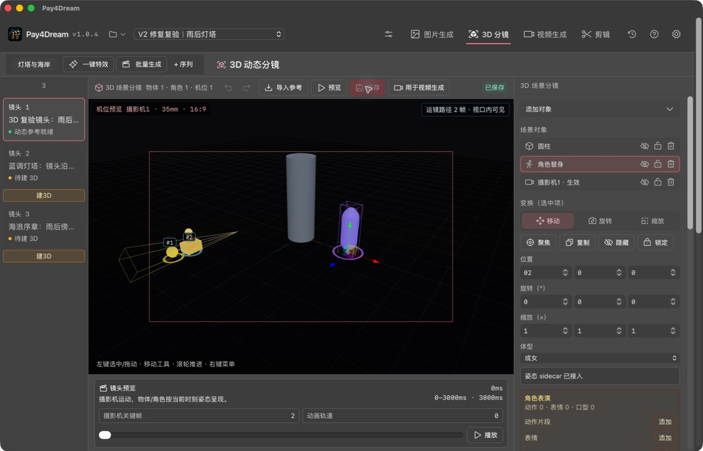

Pay4Dream
把创作工作流、候选选择与镜头编辑放在同一个工作台
版本 1.0.4 · 待发布
下载 Pay4Dream 1.0.4 Public
Public 版支持 macOS 与 Windows。安装后配置你自己的模型 API Key，即可开始建立项目、管理素材和设计镜头。
正在读取发布状态…
校验：macOS 待生成最终校验值 · Windows 待生成最终校验值
1.0.4 重点更新

Public 版 3D 分镜：程序化人偶与场景对象可见，场景对象可选并可通过旋转控件编辑。
- 创作工作台：视频、图片、3D 分镜、剪辑、任务和设置使用统一的视觉层级与控件样式。
- 候选与恢复：优化候选预览与采用、失败恢复和跨镜头状态刷新。
- 编辑体验：改善窄窗口下的顶栏、剪辑片段和 3D 视图显示；本地视频缩略图以静帧呈现。
- Public 3D：角色使用程序化人偶，保留可见、选择和基础场景编辑体验；不包含该类第三方模型资源，也不会请求其下载。
安装与安全提示
只从本页或 GitHub Release 下载 Public 包。Internal 与 Beta 包不对外分发。请在下载后核对本页显示的 SHA-256。
试用须知
- Public 版无需邀请码或激活码；首次启动后可配置自己的模型 API Key。
- Public 版不内嵌模型凭证，也不提供托管的模型额度或内部通道。
- 云端模型可能产生由对应服务商收取的费用。